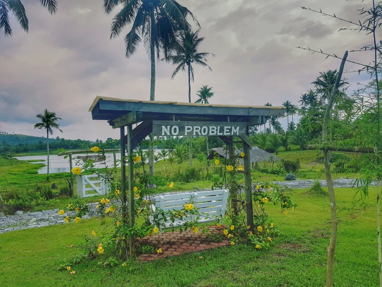

Farm Plate

Gabawan, Daraga, Albay
Escape to Farmplate in Gabawan, Daraga, Albay, where rustic charm meets tranquility. Explore large pigeon homes, enjoy fresh coconut juice with a view of Mayon Volcano, and unwind in the serene beauty of this idyllic farm for just 85 Php for adults.
Even for a few hours, picture yourself unwinding on a farm away from the bustle
of the city. Or pitch a tent and spend the night somewhere safe and quiet. Then
you should try Farmplate. Explore the farm to witness the large pigeon homes,
the red cottage featuring a water pump powered by a windmill, the stone house,
the campsite, the horses, and the flower gardens. Enjoy the fresh coconut
juice or other foods at the restaurants inside and the stunning view
of the Mayon Volcano while relaxing in one of the swings or bungalows.

Photo | Ron Alvarado
Photo | Czarina Cassandra Matza

Visitors Experience and Activities:
Kids can ride their bikes around the farm, play in the playground, or take
a carabao ride. It's a great way to unwind outside and take in the majestic
view of Mount Mayon during the Christmas season. Visitors can also gaze at the
beautiful decorations and lights that are scattered along the entirety of the
farm and jam along with the musicians who are performing live during the afternoon
and evening As well as sit around a campfire with friends and family.
All of this comes at a price though costing 60 Php for children
under 12 Years old and 85 Php for adults. It’s all worth the
price once you enter the relaxing and spacious scenery of Farmplate.
Photo | BicolDeck

Photo | MelMerize WordPress
Jaycee Cadag
The ambiance, combined with the delectable offerings and attentive service, made Farmplate a standout dining destination. FarmPlate offered a much-needed escape from the bustle of city lifeüèô, immersing me in the tranquility of rural life. Lush greenery greeted me at the entrance, and the panoramic views of Mayon Volcano were breathtakingÔ∏èüòÄüôå. Although, I would suggest adding more food options and activities.
5 days ago